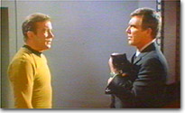
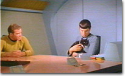
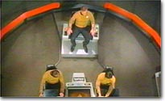
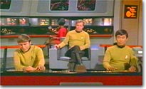
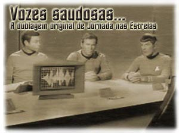
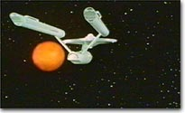
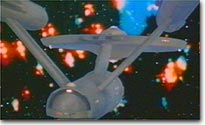
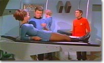
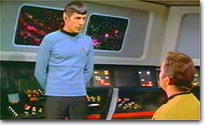
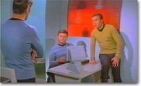

|

Kirk se apresenta a Gary Seven em
"Assignment: Earth"
05 segundos - 16 kb - Mp3

Spock mostra seu apreço pelo gato em
"Assignment: Earth"
07 segundos - 26 kb - Mp3

Kirk registra seu diário de bordo em
"The Lights of Zetar"
20 segundos - 66 kb - Mp3

Chekov e Sulu falam do amor de Scott em
"The Lights of Zetar"
07 segundos - 22 kb - Mp3
|

Por Salvador
Nogueira
& Fernando Penteriche
Comemorar os 35 anos de Jornada nas Estrelas seria impossível se não o fosse com uma grande dose de nostalgia. E quando os fãs mais antigos da série resolvem relembrar os velhos tempos, as vozes que eles ouvem ecoar em suas mentes são diferentes das que as novas gerações estão acostumadas.
Tudo começou em 1967, quando Emerson Camargo, então funcionário da empresa de dublagem AIC, de São Paulo, recebeu esta que seria sua última, mas seguramente não menos importante, ocupação na companhia: traduzir, escolher o elenco e dirigir a dublagem da primeira temporada de uma nova série que seria exibida pela TV Excelsior. Sim, era Jornada nas Estrelas a caminho do Brasil.
Camargo já não era novato na área. Além de diversos trabalhos de menor expressão como dublador, ele já tinha em seu currículo naquela época um seriado de (quase) ficção científica, o cultuado "National Kid", onde ele era ninguém menos que o próprio. Mas nada que ele tivesse feito antes o havia preparado para a tarefa à frente --reproduzir em outra língua a complicada terminologia utilizada em
Jornada.
Não que isso fosse uma falha em suas qualificações. Muito ao contrário, aquela não era uma época para traduções especializadas, como temos hoje. Naquele momento, não havia nem especialistas! Camargo então tratou de ser o primeiro.
Sua tradução, feita de forma até descompromissada, tendo em vista a impossibilidade de checar e tomar por base referências anteriores, acertou em cheio em muitos momentos, consagrando termos que hoje são indispensáveis a qualquer fã do seriado. O que seria de nós hoje sem a "dobra espacial"? E o que fazer se não há aquele velho médico do campo, o "Magro", para tratar nossa tripulação favorita?
Termos como esses e alguns outros foram gols marcados de primeira por Camargo. Entretanto, como não poderia deixar de ser, também não faltaram os gols contra. Ou alguém aí não está sabendo que nos anos 60 a nave Romulana com camuflagem era uma "nave Rômula com capa de disfarce"?
Episódios traduzidos, acertos e erros definidos, chega o momento de escolher o elenco. E adivinhem quem Camargo escolheu para ser a voz brasileira de James T. Kirk? À la William Shatner, o dublador não poderia escolher ninguém senão a si mesmo para o papel.
Além dele, Rebelo Netto, Neville Jorge, Carlos Campanelli, Helena Samara e Eleu Salvador integraram o elenco, interpretando, respectivamente, Spock, McCoy, Scotty, Uhura e Sulu. Juntos, eles dublaram o primeiro ano.
Entre esses episódios estava "Space Seed", onde o cativante vilão Khan Noonien Singh mostrava todo o seu carisma. Mas ninguém poderia prever que o dublador desse personagem, Astrogildo Filho, estava vindo para ficar. Após o primeiro ano da série, Camargo deixou a AIC, e com ela seu papel em Jornada. James Kirk estava sem voz. E seu substituto foi... Dênis Carvalho.
Isso mesmo, o diretor e ator da Rede Globo começou a carreira na dublagem, e um de seus papéis mais marcantes foi como o bom e velho capitão da nave estelar Enterprise. Carvalho, de todos os dubladores que já passaram por Kirk, foi o que melhor conseguiu reproduzir o tom de voz de William Shatner. E, curiosamente, foi o que menos episódios dublou. Antes de terminar a segunda temporada, ele iria passar a bola para, agora sim, Astrogildo Filho.
Foi Astrogildo quem realmente ficou marcado com a voz do personagem. Kirk não era mais um qualquer, ele agora tinha uma impostação digna de um locutor de rádio. E dos bons. Contraposto ao estilo suave de Camargo, ou mesmo à firmeza de Carvalho, Astrogildo elevava a voz do personagem a um novo patamar. Foi ele quem concluiu a dublagem da série, fazendo episódios do segundo e do terceiro ano.
Os outros personagens também teriam vozes trocadas ao longo das três temporadas. Spock trocou um Netto por outro: saiu Rebelo e entrou Garcia. McCoy também teve episódios com a voz de João Angelo. E Chekov, que chegou à turma no segundo ano, foi dublado por Olney Cazarré.
Dos três Kirks originais, cada um teve um destino diferente. Camargo ainda atua na área, como dono de sua própria empresa, a Mastersound. Dênis Carvalho virou estrela da Globo. Astrogildo, infelizmente, já concluiu seu teste do Kobayashi Maru. E o que é pior, nenhum deles teve a chance de, ao menos uma vez, dizer as célebres palavras "audaciosamente indo onde nenhum homem jamais esteve".

A sequência de abertura da série
47 segundos - 176 kb - Mp3
Ao contrário do que foi feito na versão original em inglês e na dublagem atual da empresa VTI-Rio, nas gravações da AIC não cabia ao capitão Kirk o célebre discurso exibido na abertura da série, mas a um narrador. O sortudo foi Antônio Celso, dublador de voz poderosa, bastante parecida com a de Astrogildo. É a versão gravada com ele que consta de todos os episódios gravados pela AIC.
Problemas aos pingos
Apesar da paixão de todos os fãs brasileiros de Jornada pelas vozes e traduções originais, muitos erros eram bastante aparentes, não só nos episódios em si, como nos próprios títulos, feitos sem muita pesquisa ou preocupação.
"Friday's Child" acabou virando "Sexta-feira". "The Changeling" ficou "A Mudança" (numa óbvia confusão entre "The Changeling" e "The Change").
"The Trouble With Tribbles" virou "O Problema". E, para coroar, "All Our Yesterdays" acabou como "Todos os Nossos Amanhãs". Tudo bem que "Amanhã é Ontem", mas não precisavam exagerar...
Em "The Paradise Syndrome", Miramanee ficou conhecida pelos brasileiros pelo nome Miranee. E alguns episódios sofriam de problemas mais intrínsecos ao processo de dublagem, e não de tradução. Um desses casos foi
"A Piece of the Action", onde Kirk e Spock não foram dublados com aquele estilo de falar dos gangsters dos anos 20.
Somando-se a isso o fato de que dez episódios dublados foram destruídos em um incêndio no fim dos anos 60 (quatro dos quais nem chegaram a ser exibidos uma vez sequer), ficava cada vez mais claro que uma nova dublagem seria necessária mais dia menos dia, os fãs querendo ou não.
A dublagem antiga aguentou as pontas até 1983, quando foi exibida pela última vez na Rede Bandeirantes. Mas em 1990, quando a Rede Manchete resolveu voltar a exibir a série original de
Jornada, após vários anos no limbo, o sonho acabou. Constatou-se que, somados a todos esses problemas, as gravações remanescentes não tinham qualidade suficiente para voltar à televisão. Chegava o momento de dar novas vozes a Kirk, Spock, McCoy e cia.
Recrutando a tropa
Cristina Nastasi, então já envolvida com o processo de redublagem dos episódios, agora a cargo da VTI, era uma das fãs de carteirinha das vozes antigas. Ela conta que tentou encontrar os dubladores originais para que eles mesmos refizessem o trabalho. Infelizmente, diz ela, foi impossível trazê-los a bordo.
Entretanto, a nova equipe certamente era tão marcante quanto sua predecessora. Garcia Junior foi chamado a interpretar Kirk. O dublador tinha em seu currículo personagens como MacGyver. Para a sempre complicada dublagem de Spock, o escolhido foi um veterano na arte de interpretar personagens sem emoção: Márcio Seixas, sem dúvida um dos maiores dubladores da atualidade. Quando chegou para levar Spock ao português, Seixas já trazia na bagagem o computador HAL 9000, de "2001 - Uma Odisséia no Espaço", e diversos trabalhos conhecidos, como dublagens de James Gardner e Clint Eastwood. O dublador também é atualmente conhecido por diversos trabalhos junto à Disney e quem assiste à versão animada de "Batman" também o conhece bem.
Para McCoy, a dublagem ficou a cargo de Newton Valério. Scotty foi feito por Waldir Sant'Anna, Uhura por Lina Rossana, Sulu por Cleonir Santos e Chekov por Marcos Ribeiro.
Na ocasião, a Manchete encomendou 52 episódios, o que equivaleu aproximadamente às duas primeiras temporadas. Outros 27 só seriam redublados no final dos anos 90, quando o canal USA resolveu exibir os episódios restantes da série original. Enquanto isso, o pacote inicial de episódios foi reprisado ad eternum na televisão brasileira, incluindo aí passagens pela Record e pela Bandeirantes.
Quando o USA resolveu bancar a tradução dos episódios restantes, o elenco que havia feito a dublagem para a VTI já não mais trabalhava para a empresa. Mais uma vez Nastasi tentou reunir a turma, ou ao menos o trio Emerson Camargo, Márcio Seixas e Newton Valério. Acabou não sendo possível, e o elenco todo teve de ser escalado novamente.
A Marco Antônio coube o capitão. Lauro Fabiano dublou Spock (por apenas um punhado de episódios --algum tempo depois, Márcio Seixas voltaria ao personagem). Leonel Abrantes (que também dubla o chefe O'Brien, de
A Nova Geração e Deep Space Nine) dublou McCoy. Carlos Seidl, Vânia Rocha, Malta Jr. e Mário Tupinambá viraram Scotty, Uhura, Sulu e Chekov. Esse foi o time que concluiu a série, na versão que é exibida atualmente pelo USA.
É difícil dizer qual é a melhor versão. Umas falam mais alto ao coração, outras atraem pela razão. A discussão no plano do que é melhor é até tola. O mais importante disso tudo é o caminho, os 35 anos de tenras lembranças na memória de cada fã. O resto, amigo leitor, são apenas palavras...
Retornar
|

Kirk ordena retirada imediata em
"The Lights of Zetar"
04 segundos - 17 kb - Mp3

Mira Romaine, Chapel e McCoy falam
em
"The Lights of Zetar"
17 segundos - 50 kb - Mp3

Kirk, Scotty, Uhura e Spock falam em
"The Lights of Zetar"
16 segundos - 49 kb - Mp3

Kirk, Spock e McCoy num final feliz em
"The Lights of Zetar"
53 segundos - 157 kb - Mp3
|